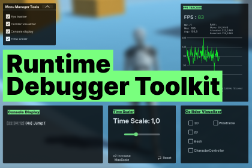

Runtime Debugger Toolkit

Introduction
This asset is designed to support debugging during Unity project development. It consolidates several runtime tools into a single, easy-to-integrate package:
- Collider Visualizer: Display 2D and 3D colliders in-game, helping you understand physical interactions at runtime.
- In-Game Console: Displays Unity’s log messages (Logs, Warnings, Errors) within the game window, both in the editor and in builds.
- FPS Tracker: Tracks FPS in real-time via a live graph, while also providing memory usage and detailed system info (OS, resolution, processor, RAM, etc).
- Time Scaler: Allows simulation speed adjustment to help with debugging, slow-motion analysis, or performance tuning.
Each tool is accessible via draggable in-game UIs, giving you flexible control over your simulation and making bug identification and performance tuning much easier.
Installation
Import via Unity Package Manager. If this is your first time using it, we recommend importing the Demo folder, which includes a playground scene built on Unity’s Starter Asset (Third Person Controller). For the demo scene to work, make sure you also import Cinemachine, Input System and TextMeshPro packages.
If you do not need the demo then you just need to drag DebuggerToolManager.prefab into your scene. Make sure you have a UI Event System present in your scene to enable interaction with the tools.
Unity version: 2022.3.7f1. Supports URP, Built-in, HDRP (collider tool not HDRP-compatible).
Folder Descriptions
- Demo/: Includes a sample Playground scene to test and interact with the debugger tools. Optional for use.
- Documentation/: Includes Debugger Tool Manual.pdf.
- Prefabs/: Core UI prefabs, especially DebuggerToolManager.prefab.
- Resources/: Includes fonts, sprites, shaders, and materials used in visualizations.
- Scripts/: All runtime scripts powering the tools.
- Editor/: Contains utility for converting URP materials to Built-in.
Usage
- Running the Demo: In URP and HDRP, materials work out of the box. For Standard pipeline, use the converter script
URPToStandardConverter.cs under Tools > URPToStandardConverter to adapt materials.
- Prefab Setup: The main prefab is
DebuggerToolManagerc. Its DebuggerToolManager.cs script handles mouse lock/unlock (default key: Tab) to enable interaction with in-game UIs. If this key is already used in your project, you can disable this behavior in the Inspector and change the key inside the script.
Tool Details
- Collider Visualizer: Script: RuntimeColliderDebugger - Visualizes different collider types (2D/3D). Color meaning : - Green = accurate physical mesh - Yellow = approximated convex mesh (Unity’s internal algorithms are not publicly accessible). You can choose between Wireframe or solid color mode. - Colors can be customized via Inspector.
- In-Game Console: Script: InGameConsoleDisplay.cs on InGameConsole_Panel - Toggle log types (Info, Warning, Error) - Adjustable max message number inside the inspector (default: 100)
- FPS Tracker: Script: FPSGraph.cs on Graph Panel - Shows FPS graph and system stats – You can adjust graph size and choose between dynamic value of the max fps or cap it inside this inspector with the “ShowDynamicMaxFPS” boolean which enables/disables automatic scaling allowing to see with ease if fps are going under the max value defined.
- Time Scaler: Script on Time_Scaler_Canvas - In-game slider to adjust Time.timeScale - Button “x2 Increase MaxScale” multiply by two the value of the slider upper value. (no upper limit) - Reset button restores scale to 1.0 and default range (0.1–3.0)
Tip
To use wireframe on imported meshes, enable Read/Write in the Model Import Settings.
See on Unity Asset Store